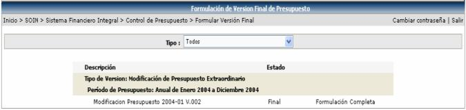
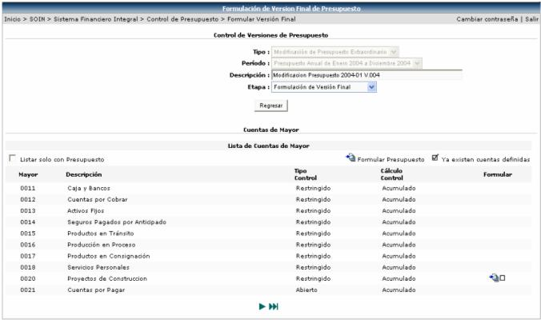

En esta opción se listarán todas aquellas versiones creadas en la opción Versiones de Formulación de Presupuesto, que tengan asociada la etapa Final.
Finalmente se modificarán los cambios solicitados por cada usuario, digitando ajustes finales para obtener el monto final solicitado y en el caso de una modificación presupuestaria, el monto de la modificación solicitada.

Al seleccionar una formulación de presupuesto, se desplegará la siguiente pantalla donde se podrá modificar el monto solicitado realizándole ajustes finales (aumentándole o rebajándole el monto):

Para ello se debe de seleccionar una cuenta de mayor y a continuación se desplegará la lista de cuentas de presupuesto para proceder a cambiar los montos solicitados, realizándole ajustes finales (aumentando o rebajando el monto):
Una vez en esta pantalla, se selecciona la cuenta a modificar y se presenta la pantalla donde se puede escoger, si hacer el ajuste por moneda o por meses:

La columna que se cambiará será la de Ajustes Finales, ya sea aumentando o rebajando el monto solicitado: